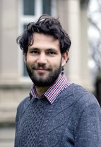
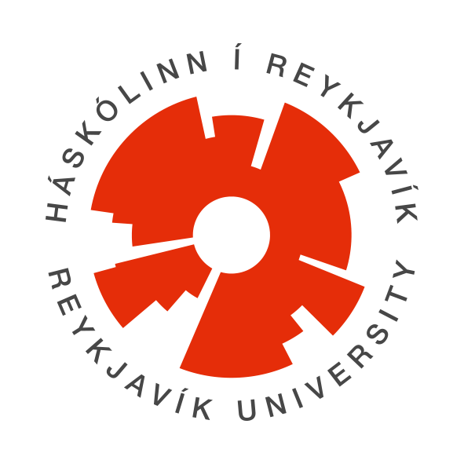
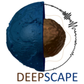

Franck Latallerie

I am a geophysicist interested in the internal structure of the Earth, its dynamics, and how it shapes the surface and produces natural phenomenon such as volcanism and earthquakes.
As a seismologist, I analyse the seismicity of the Earth, which may require deploying seismic instruments on the field, understanding how waves behave in the Earth, and process seismic waves recordings to extract meaningful information from them.
As a tomographer, I develop and apply mathematical methods to transform seismic data into `human readable', useful products, that help us infer physical properties of the subsurface, such as its temperature, composition, or the presence of fluids, to cite a few.
I also teach courses in Earth Sciences to undergraduate students, and regularly participate to outreach events, where I give talks on seismology and the deep Earth, play with real-time recordings or illustrate wave physics with sliky springs.
Current position

I am postdoctoral researcher at Reykjavìk University where I work with Dr. Vala Hjörleifsdóttir, and many collaborators in Iceland and oversea. The projects focus on the characterisation of volcano and geothermal reservoirs. Two closely related projects are funded by our industrial partners HR Orka and Reykjav&igravik Energy. In particular, our areas of focus are Hengill and Krýsuvík geothermal fields in south-west Iceland. Both fields will be constrained by seismic nodes and DAS data. We are currently planning a deployment campain of seismic nodes on Krýsuvík.
Previous Positions

Before Reykjavík, I was postdoctoral research assistant at University of Oxford, between 2023-2025. I was in the Deepscape group where I worked with Dr. Paula Koelemeijer and Dr. Andrew Walker. The project was funded by a Large NERC Grant from the UK research and innovation agency, motivating interdisciplinary work to constrain mantle circulation over the past 1 GA. In particular, I produced images with informative statistics of the Vs structure of the lithoshphere beneath the Pacific Ocean, in a fully 3D framework. I also worked with Andy Nowacky at University of Leeds on the anisotropy of the upper mantle beneath the Pacific Ocean. During my time at Oxford, I was also Stipendiary Lecturer at St Anne College, where I taught undergraduates from the Earth Sciences department. Before this, I was PhD student, in 2020-2022, at University of Strasbourg, where I worked with Pr. Alessia Maggi, Dr. Christophe Zaroli and Dr. Sophie Lambotte. We developped and applied surface-wave tomography with the Backus-Gilbert theory in 2D, and paved the way for the 3D implementation that I achieved during my postdoc at Oxford..
Note about this website header image
This is a map of the topography and bathymetry (data from the NOAA).